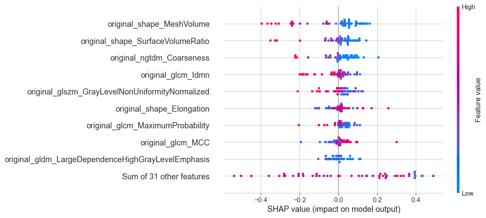

original_shape_Flatness: Measures how flat the area of interest is by comparing the shortest and longest dimensions.
original_shape_SurfaceArea: Calculates the total outer area of the interested region.
original_firstorder_TotalEnergy: Measures the sum of all the squared values within the interested region.
original_glcm_ClusterShade: A measure indicating how distributed or dispersed the various shade levels are in the image.
original_glcm_Imc1: Indicates how related the distribution of different color shades in the image is to its 4 neighboring shades.
original_ngtdm_Coarseness: Measures how much changes in intensity occur in the local area of the image.
original_ngtdm_Strength: Provides a measure of the likelihood of having similar brightness and length patterns in the image.
original_shape_MinorAxisLength: It's the length of the shortest line that can be drawn across the area of interest.
original_firstorder_Energy: Reflects the total amount of distinct brightness levels in the image.
original_firstorder_Minimum: Gives the lowest brightness level found in the area of interest.
Description features tabpfn

original_shape_MeshVolume: Calculates the total space occupied by the region of interest.
original_shape_SurfaceVolumeRatio: Measures the ratio between the surface area and the volume of the region of interest.
original_ngtdm_Coarseness: Measures how much changes in intensity occur in the local area of the image.
original_glcm_Idmn: Provides a measure of the variety in brightness levels in an image, with a higher value indicating more uniformity.
original_glrlm_GrayLevelNonUniformityNormalized: Expression of the similarity of gray levels in the image, with a higher value indicating more similarity.
original_shape_Elongation: It's a ratio that shows how much the shape of the region of interest extends from a perfect sphere.
original_glcm_MaximumProbability: Gives the most likely brightness level co-occurrence in the image.
original_glcm_MCC: Provides a measure of correlation of brightness between different regions of the image.
original_gldm_LargeDependenceHighGrayLevelEmphasis: Expresses the presence of large areas with high brightness levels.
original_gldm_DependenceNonUniformity: Gives a measure of the similarity in brightness level sequences in the image.
original_glcm_DifferenceAverage: Provides the average difference in brightness between a pixel and its neighbor across the entire image.
original_gldm_SmallDependenceHighGrayLevelEmphasis: Measures the presence of small, brighter regions in the image.